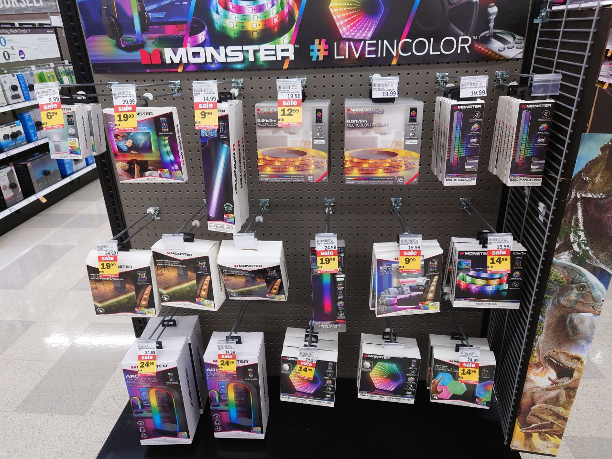
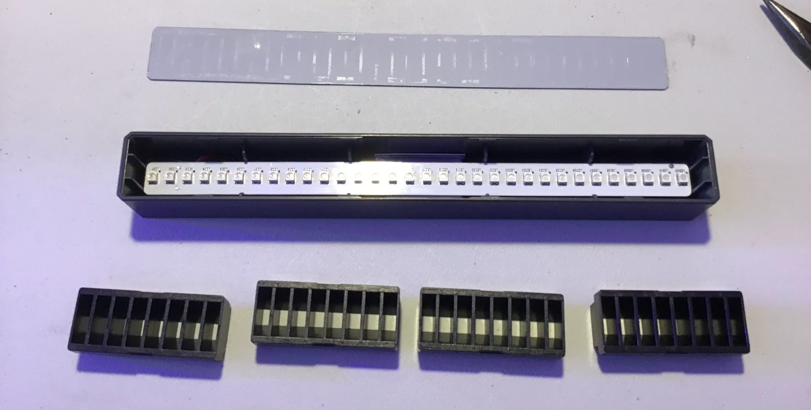
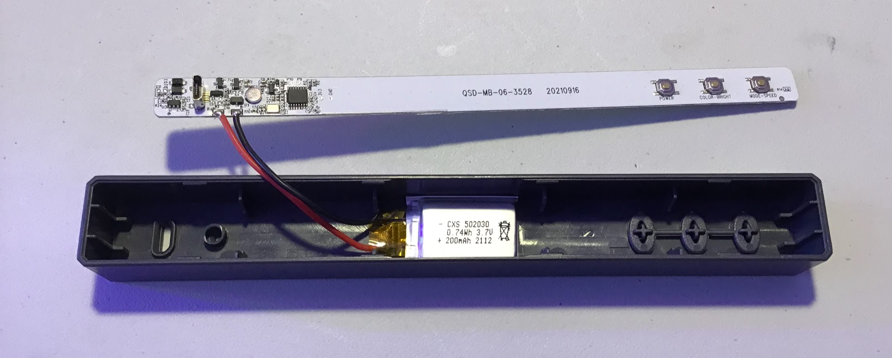
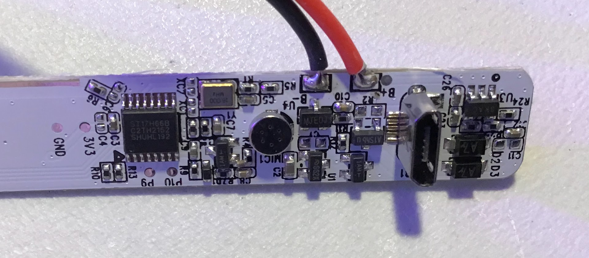
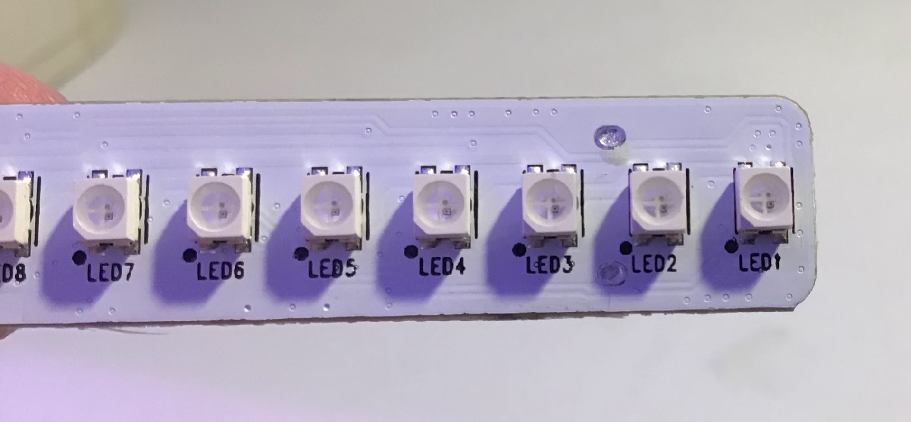
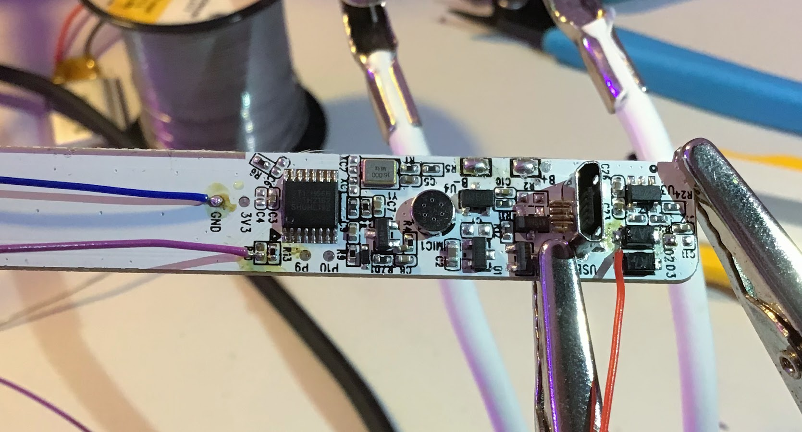
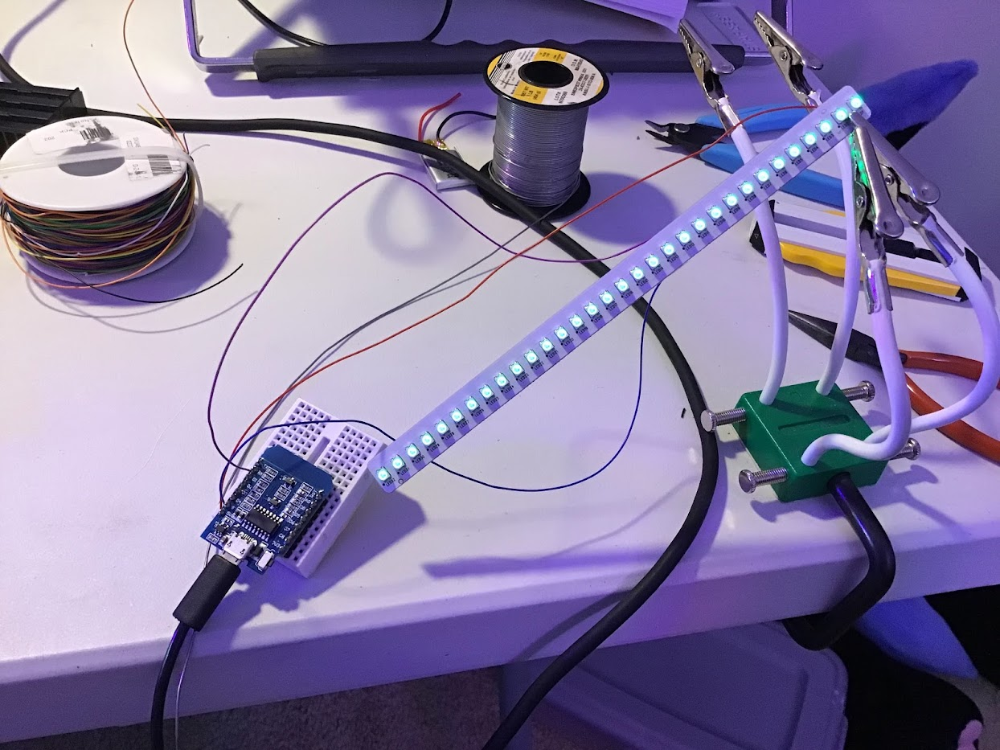
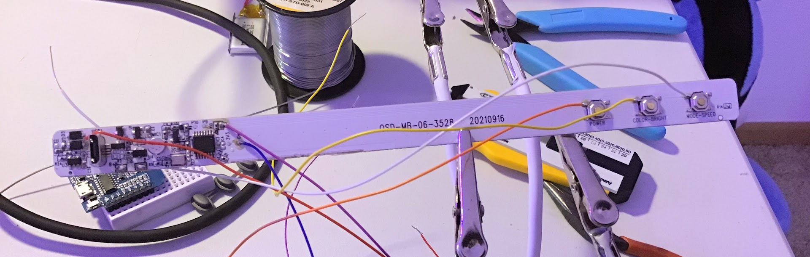
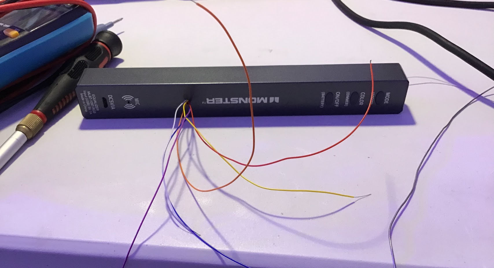
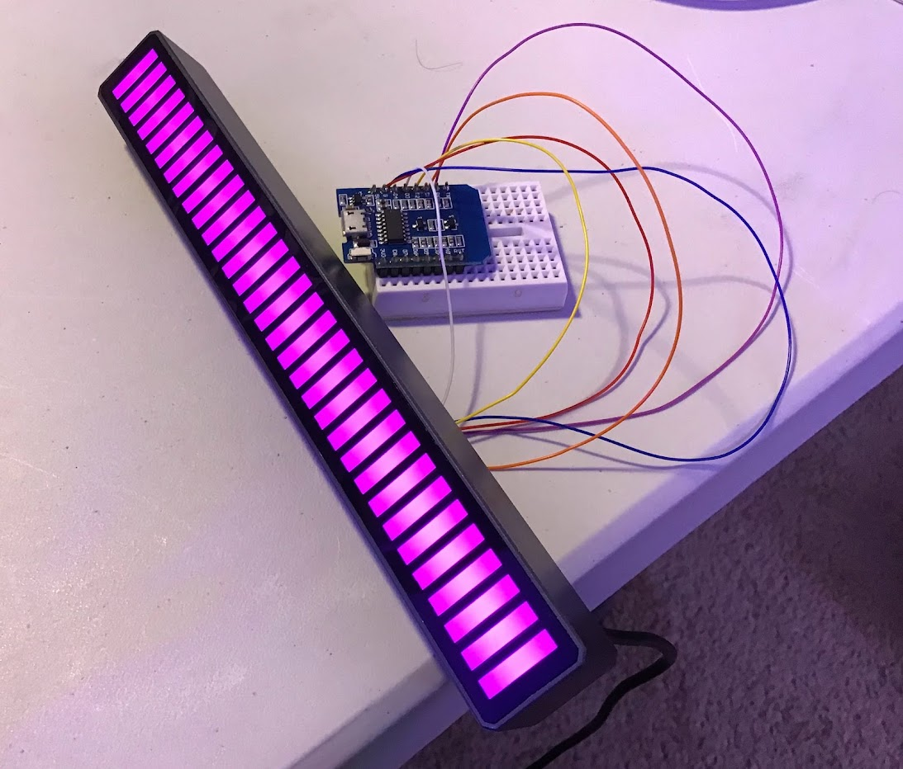

this past weekend, a friend and i visited the local meijer and found a bunch of cheap, discounted RGB LED accessories. most of these were pretty generic and tacky, but the little "equalizer" LED bargraph in the upper-right corner of the shelf piqued our interest. even if it sucked as a music visualizer, it could still be useful as an LED bargraph display, and for only $10, it was a no-brainer. (the price tag said $20, but it rang up as only $10!)
turns out that it was actually a pretty nice, well-diffused LED display that didn't look or feel all that bad. however, it really did suck as a music visualizer. instead of being a regular VU meter that displayed the instantaneous volume of whatever it was hearing (which would actually be a pretty nice effect), it was applying some kind of terrible beat/peak/energy detection to the audio and only displaying the output of that. most of the time, the meter just kinda floundered around, barely following the volume of the music, until it latched onto a kick drum or bass synth and only displayed that while completely ignoring the rest of the sound.
time to tear it apart! my plan is to find and break out connections to the LED strip and buttons, then replace the microcontroller with an ESP8266 so it can be used with esphome and home assistant.
the dark plastic diffuser in front of LEDs is just a glued-on flexible sheet that's easy to peel off.
inside, there's these four plastic pieces that create the crisp rectangular light regions. these are just held in by little tabs on the enclosure and can be popped out with a bit of elbow grease.
after everything else is removed, the PCB just kinda falls out, revealing the spicy pillow beneath (which will be removed immediately). i'm impressed by how there's zero screws anywhere, yet nothing rattles or feels loose when fully assembled. neat!
a close-up of the PCB. it's pretty packed in here with all the circuitry necessary for the microphone and battery management. the microcontroller is a ST17H66B2, a reasonably powerful 32-bit processor with built-in bluetooth support. (in addition to the buttons on the back, there's a very sketchy bluetooth app for configuring settings and effects.)
the other side of the PCB houses all of the LEDs, which are just 3535-sized neopixels all connected in series. convenient!
i eventually traced the neopixel data line to R10 on the PCB and connected it to a bodge wire, then removed R10 to prevent the micro from being able to control the neopixels. the presence of this 100 ohm resistor between the micro and neopixel's data input seemed totally unnecessary, so i didn't bother trying to replace it with anything. (spoiler alert: it was very necessary.)
i programmed an ESP8266 with esphome to show up in home assistant as a standard RGB light, then connected it to the neopixel data line on the PCB. it worked on the first try!
the button connections were also broken out so that they can be used by the ESP.
i reassembled the enclosure and drilled a small hole in the back to pass through the wire spaghetti.
everything still worked after it was reassembled!
it was at this point that i realized that the seemingly superfluous 100 ohm resistor between the micro's output and neopixel's input was actually very necessary. without it, the neopixel will try to draw as much current as possible from the ESP's output and generate a terrifying amount of heat by doing so. fortunately, adding in another 100 ohm resistor fixed the issue and nothing was damaged.
the next step will be to design a small enclosure to contain the ESP and associated wire mess that can be stuck to the back of the unit. stay tuned!